Brain substructures’ volume#
In this notebook:
we compute volumes of meshes for different substructures and subjects
we compare volumes obtained using different segmentation tools
[1]:
import numpy as np
import polpo.preprocessing.dict as ppdict
import polpo.preprocessing.pd as ppd
from matplotlib import pyplot as plt
from polpo.binarizer import StageBinarizer
from polpo.preprocessing import (
BranchingPipeline,
IndexMap,
NestingSwapper,
)
from polpo.preprocessing.load.fsl import get_all_first_structs
from polpo.preprocessing.load.pregnancy.jacobs import (
MeshLoader,
MeshLoaderFromMri,
TabularDataLoader,
)
from polpo.sklearn.compose import BinarizedEstimator
from sklearn.linear_model import LinearRegression
[KeOps] Warning : cuda was detected, but driver API could not be initialized. Switching to cpu only.
[2]:
DEBUG = False
[3]:
subject_subset = ["01"] if DEBUG else None
structs = get_all_first_structs(include_brstem=False, order=True)
if DEBUG:
n_unique_structs = 2
left_structs = filter(lambda struct: struct.startswith("L_"), structs)
right_structs = filter(lambda struct: struct.startswith("R_"), structs)
structs = [next(left_structs) for _ in range(n_unique_structs)] + [
next(right_structs) for _ in range(n_unique_structs)
]
print(structs)
['L_Accu', 'L_Amyg', 'L_Caud', 'L_Hipp', 'L_Pall', 'L_Puta', 'L_Thal', 'R_Accu', 'R_Amyg', 'R_Caud', 'R_Hipp', 'R_Pall', 'R_Puta', 'R_Thal']
Loading tabular data.
[4]:
pipe = TabularDataLoader()
df = pipe()
INFO: Data has already been downloaded... using cached file ('/home/luisfpereira/.herbrain/data/maternal/maternal_brain_project_pilot/rawdata/28Baby_Hormones.csv').
[5]:
predictor_selector = ppd.GroupByColumn("subject", as_dict=True) + ppdict.DictMap(
ppd.IndexSetter("sessionID", drop=True)
+ ppd.ColumnsSelector("gestWeek")
+ ppd.SeriesToDict()
)
x_dict = predictor_selector(df)
Volume (enigma meshes)#
Loading data#
[6]:
mesh_loader = (
MeshLoader(
subject_subset=subject_subset,
struct_subset=structs,
as_mesh=True,
derivative="enigma",
)
+ ppdict.DictMap(ppdict.NestedDictSwapper())
+ ppdict.KeySorter()
)
# subject, struct, session
raw_meshes = mesh_loader()
Merge left and right#
[7]:
def _merger(data):
left_meshes, right_meshes = data
meshes = {}
struct_merger = ppdict.DictMerger(step=lambda x: x[0] + x[1], as_dict=True)
for left_key, left_meshes_struct in left_meshes.items():
struct_name = left_key[2:]
right_meshes_struct = right_meshes[f"R_{struct_name}"]
meshes[struct_name] = struct_merger((left_meshes_struct, right_meshes_struct))
return meshes
mesh_joiner = BranchingPipeline(
[
ppdict.DictFilter(lambda key: key.startswith("L"), filter_keys=True),
ppdict.DictFilter(lambda key: key.startswith("R"), filter_keys=True),
],
merger=_merger,
)
concat_meshes = ppdict.DictMap(mesh_joiner)(raw_meshes)
for subj_id, subj_dict in raw_meshes.items():
subj_dict.update(concat_meshes[subj_id])
Plot volumes#
[8]:
dataset_pipe = (
ppdict.DictMerger() + NestingSwapper() + IndexMap(lambda x: np.array(x), index=0)
)
bin2plot = StageBinarizer(merge_pre_preg=True)
bin2color = ["blue", "red"]
model = BinarizedEstimator(LinearRegression(fit_intercept=True), bin2plot)
def plot_volumes_subject(subject_id, meshes):
_, axes = plt.subplots(
nrows=2 + 1,
ncols=len(structs) // 2,
sharex=False,
sharey=False,
squeeze=True,
figsize=(30, 12),
dpi=150,
)
if not isinstance(axes[0], np.ndarray):
axes = [[ax] for ax in axes]
for pos, (struct_name, meshes_struct) in enumerate(meshes.items()):
# TODO: fix lims per struct?
# TODO: break axes? see brokenaxes
col_index = pos % (len(structs) // 2)
row_index = 2 if "_" not in struct_name else int(struct_name.startswith("L"))
ax = axes[row_index][col_index]
x, meshes_ = dataset_pipe((x_dict[subject_id], meshes_struct))
volumes = [mesh.volume for mesh in meshes_]
bin_x, bin_volumes = bin2plot(x, volumes)
for x_, volumes_, color in zip(bin_x, bin_volumes, bin2color):
ax.scatter(x_, volumes_, color=color)
model.fit(x[:, None], volumes)
x_pred = np.linspace(min(x), max(x))
volume_pred = model.predict(x_pred[:, None])
bin_x_pred, bin_volume_pred = bin2plot(x_pred, volume_pred)
for x_, volumes_, color in zip(bin_x_pred, bin_volume_pred, bin2color):
ax.plot(x_, volumes_, color=color)
if col_index == 0:
ax.set_ylabel("Volume")
if row_index == 2:
ax.set_xlabel("Gestational week")
ax.set_title(f"{struct_name}")
plt.suptitle(subject_id)
plt.show()
[9]:
for subject_id, meshes in raw_meshes.items():
plot_volumes_subject(subject_id, meshes)
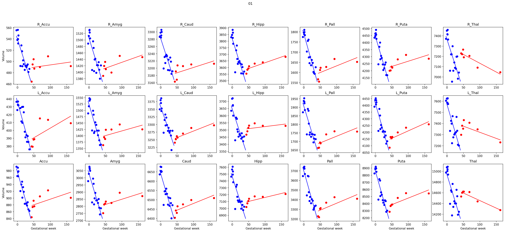
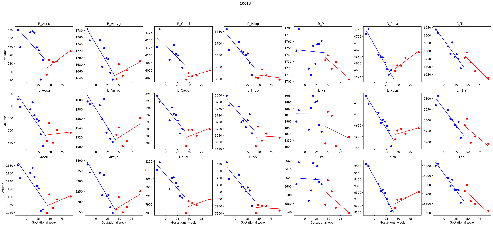
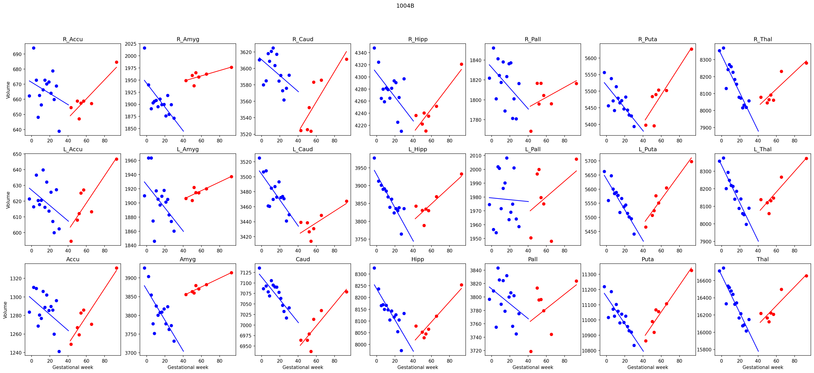
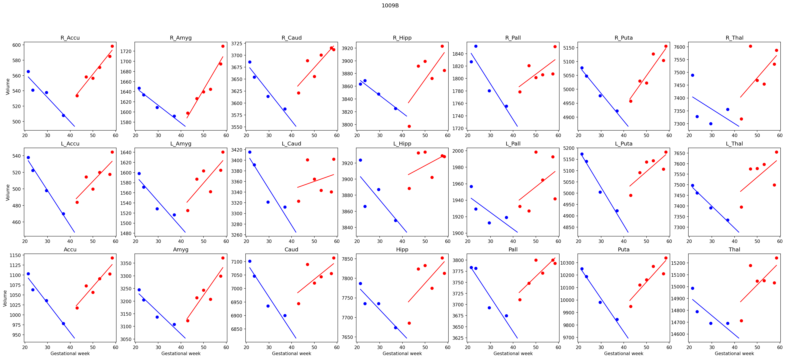
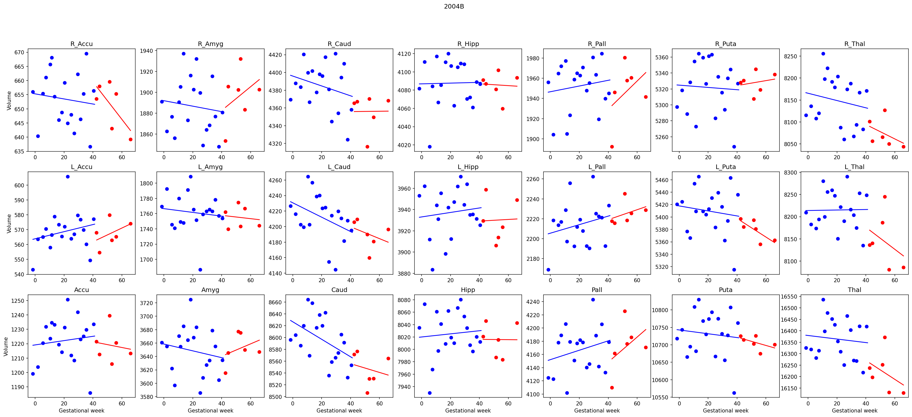
Volume (fsl_first meshes)#
[10]:
# subject, struct, session
mesh_loader = (
MeshLoader(
subject_subset=subject_subset,
struct_subset=structs,
as_mesh=True,
derivative="fsl",
)
+ ppdict.DictMap(ppdict.NestedDictSwapper())
+ ppdict.KeySorter()
)
raw_meshes = mesh_loader()
concat_meshes = ppdict.DictMap(mesh_joiner)(raw_meshes)
for subj_id, subj_dict in raw_meshes.items():
subj_dict.update(concat_meshes[subj_id])
[11]:
for subject_id, meshes in raw_meshes.items():
plot_volumes_subject(subject_id, meshes)

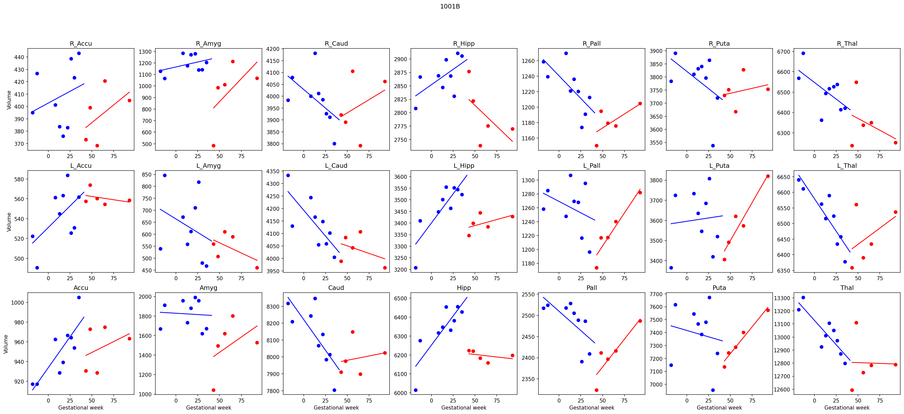
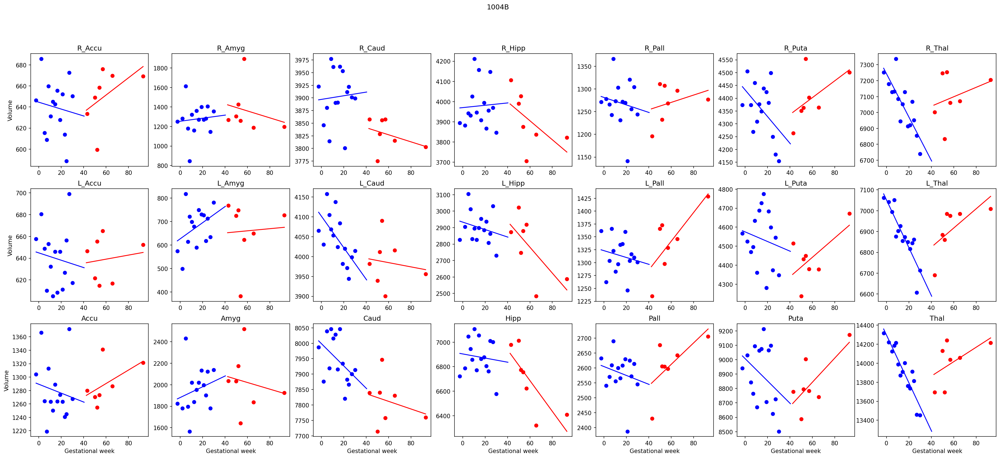
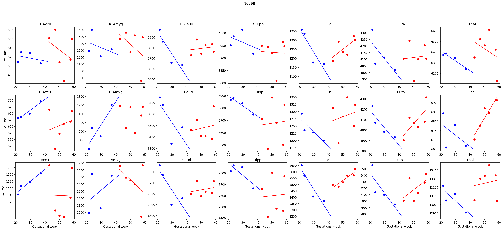
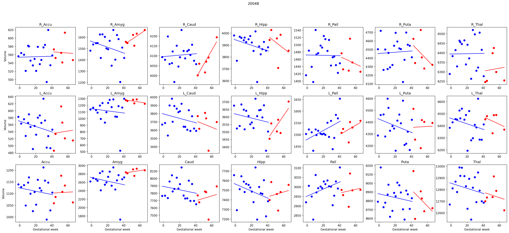
Volume (fastsurfer_meshes meshes)#
Using image segmentations.
[12]:
mesh_loader = (
MeshLoaderFromMri(
subject_subset=subject_subset,
session_subset=[1, 2, 25, 26] if DEBUG else None,
struct_subset=structs,
derivative="fast",
n_jobs=-1,
split_before_meshing=True,
)
+ ppdict.DictMap(ppdict.NestedDictSwapper())
+ ppdict.KeySorter()
)
# subject, struct, session
raw_meshes = mesh_loader()
[13]:
concat_meshes = ppdict.DictMap(mesh_joiner)(raw_meshes)
for subj_id, subj_dict in raw_meshes.items():
subj_dict.update(concat_meshes[subj_id])
[14]:
for subject_id, meshes in raw_meshes.items():
plot_volumes_subject(subject_id, meshes)
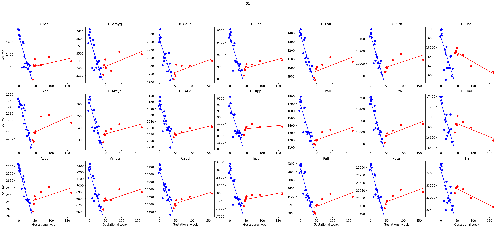
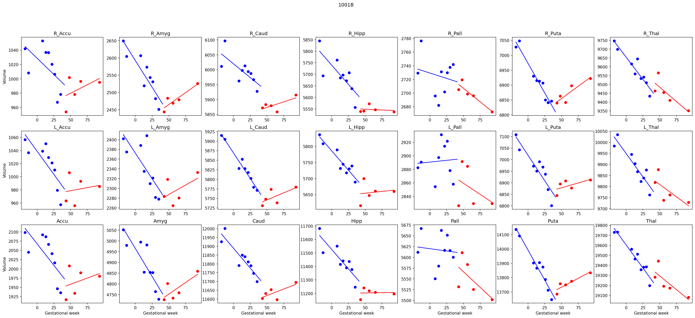
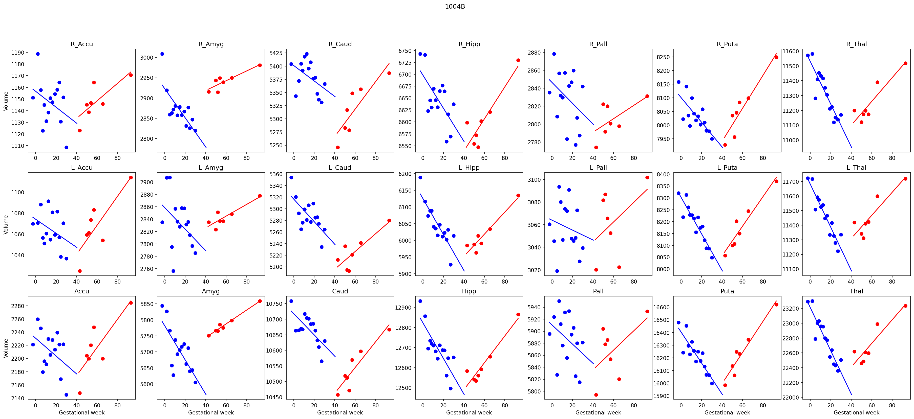
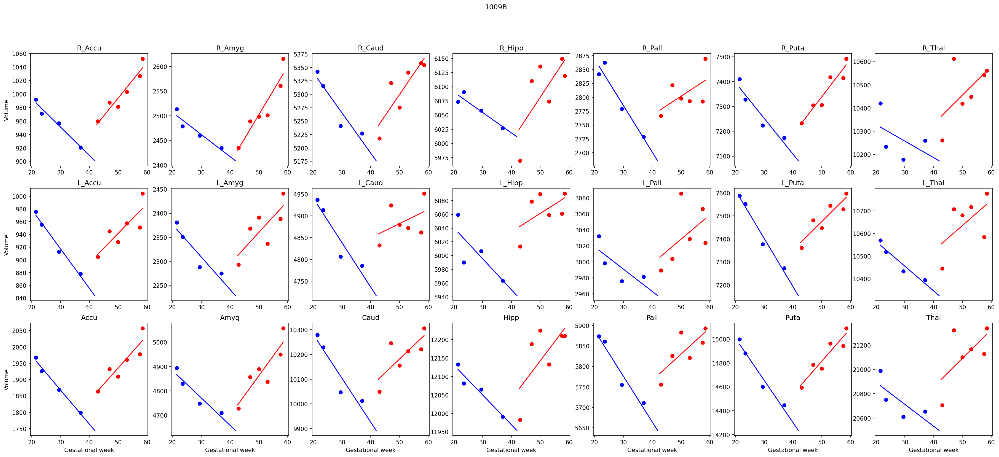
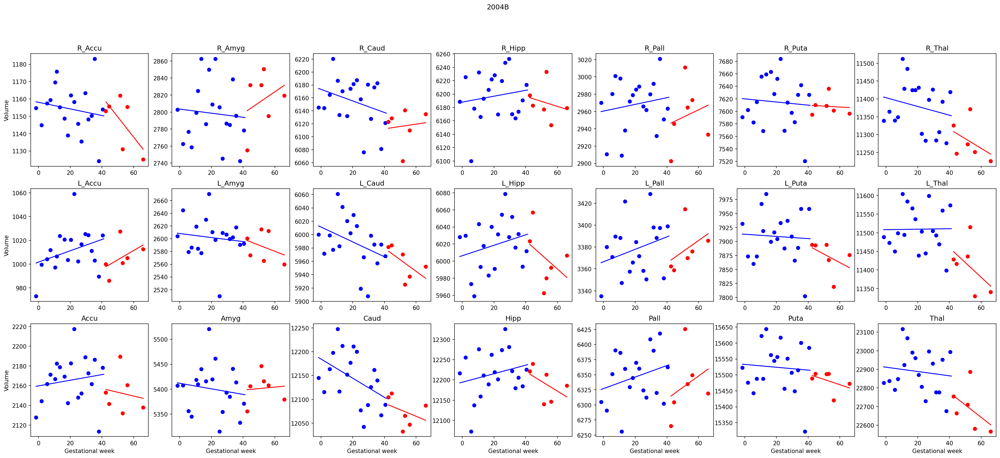